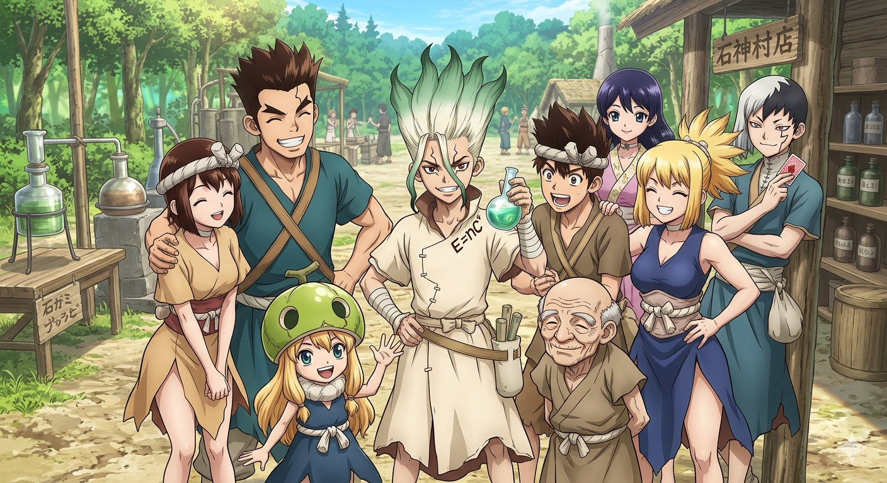
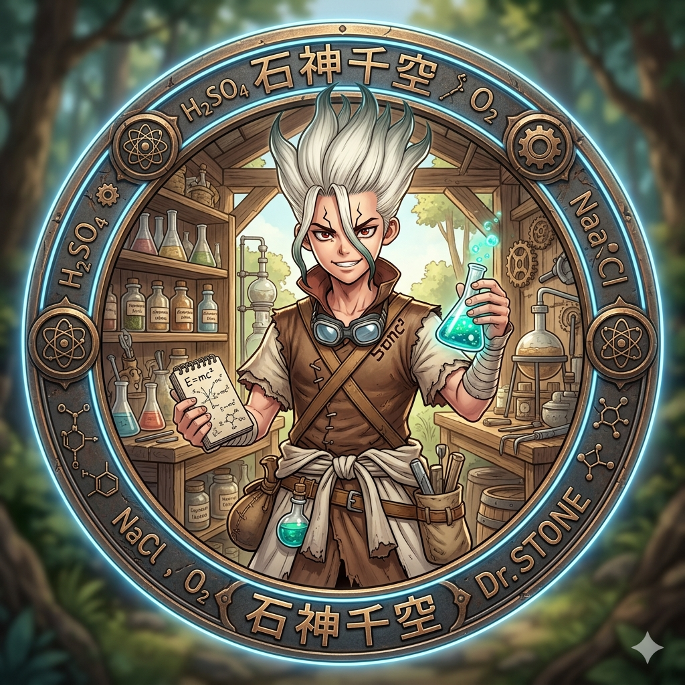
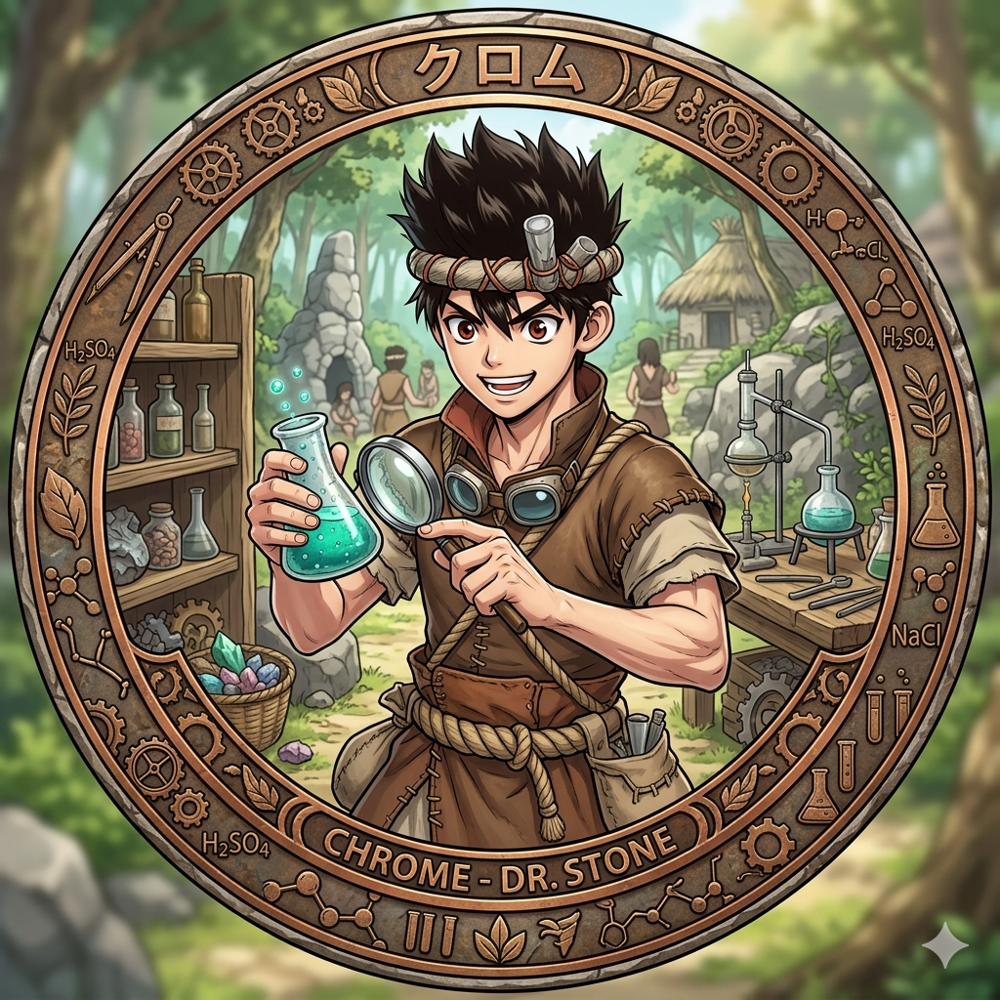
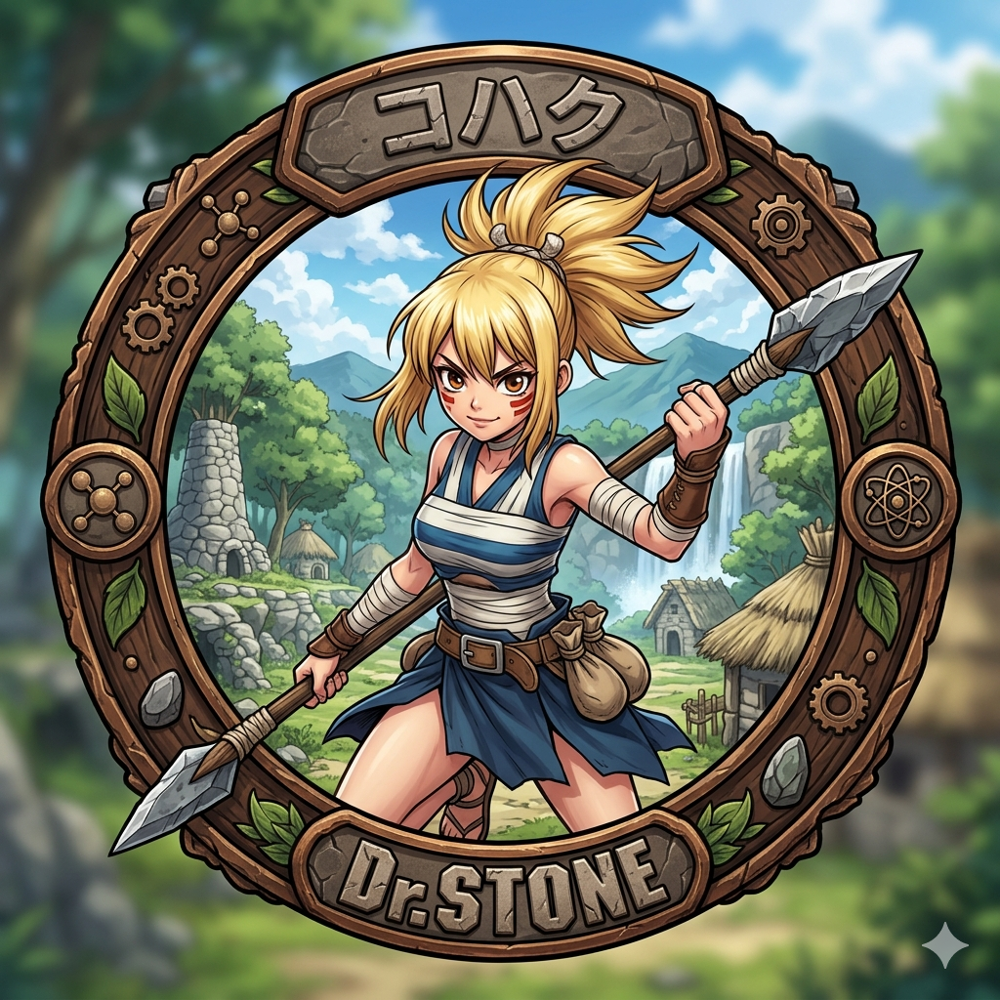
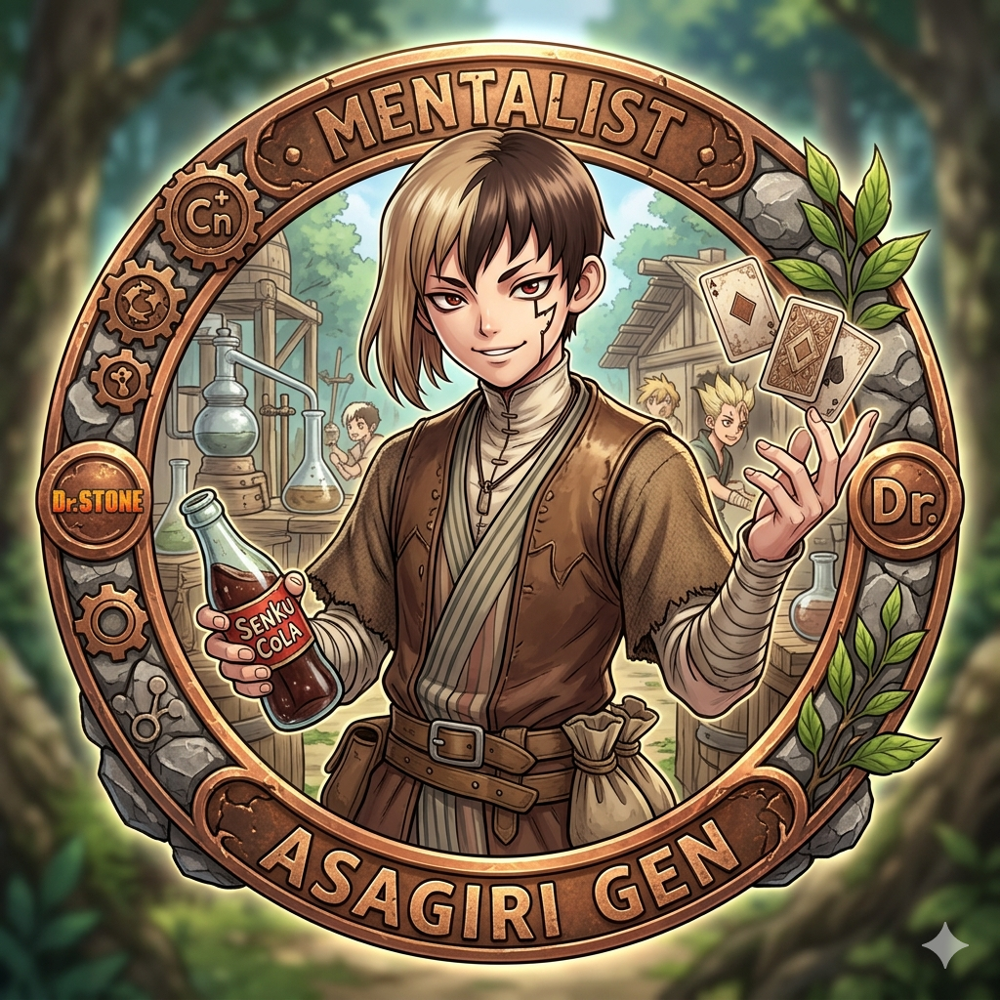

Kebangkitan Melalui Ilmu Pengetahuan

Senku Ishigami
Published: 24 Mei 2024
Ketika Sebuah Kilatan Cahaya Misterius Mengubah Seluruh apopulasi Manusia Menjadi Batu, Peradaban Modern Runtuh Kembali Ke Zaman Pra Sejarah. Berabad-abad Berlalu Hingga Seorang Ilmuwan Jenius Muda, Senku Ishigami, Terbebas Dari Belenggu Batu. Bersama Sains, Ia Bertekad Untuk Mengembalikan Peradaban Dunia!
Formula Penyelamat: HNO3 + C2H5OH
"Sains tidak akan pernah kalah dalam mengembalikan kehidupan!"
Perjalanan merangkai kembali miliaran tahun penciptaan sains dari dunia primitif tak berteknologi.
Semua bermula saat kilatan cahaya hijau misterius membatu-kan seluruh manusia secara global. Setelah 3.700 tahun, siswa jenius pecinta ilmu pengetahuan, **Senku Ishigami**, terbangun di tengah hutan belantara purba. Mengetahui semua kemajuan teknologi telah lenyap terkikis waktu, Senku bersumpah untuk menggunakan kepintarannya untuk melompati sejarah teknologi jutaan tahun.
Namun, jalannya tidaklah mudah. Ia harus menghadapi konflik ideologi yang besar dengan **Tsukasa Shio**, pemuda terkuat yang ingin membangun dunia murni tanpa polusi industri ataupun kebusukan kaum dewasa dari masa lalu. Perang ideologi antara **Kerajaan Sains (Senku)** dan **Kekaisaran Tsukasa (Kekuatan Fisik)** pun tak terelakkan.
Cairan Nital (Nitric Acid + Alcohol): Senyawa pelarut pembatuan untuk membangkitkan manusia dari batu.
Sulfa Drug: Obat penyembuh infeksi paru-paru Ruri, tonggak sejarah medis pertama Kerajaan Sains.
Generator Listrik & Telekomunikasi: Memasuki era telekomunikasi lewat telepon kabel sederhana di dunia batu.
Otak & Pendiri Sains
Otak jenius luar biasa dengan ingatan jutaan rumus fisika dan kimia bumi.

Penyihir Sains Lokal
Pemuda lokal berbakat tinggi yang awalnya mengira sains murni sebagai kekuatan sihir.

Kekuatan Tempur Utama
Prajurit wanita terkuat di desa dengan visi mata elang yang sangat tajam luar biasa.

Ahli Mentalis & Diplomasi
Pakar psikologis ulung yang membelot dari kerajaan Tsukasa demi cola ilmu sains.
Tonton sekilas visual berkualitas tinggi yang menakjubkan dari petualangan sains Senku.
Dengarkan musik-musik luar biasa bersemangat tinggi yang mengiringi Kerajaan Sains.
Musik tema pembuka perdana yang mengguncang dunia dengan lirik semangat fajar sains.
Lagu pembuka kedua dari musim pertama yang bernuansa ceria, menggambarkan persahabatan.
Lagu petualangan penjelajahan laut bebas menuju kejayaan sains di era New World.
Mulai tonton petualangan sains di tiap episodenya langsung ke masing-masing halaman session.
Season pertama memperkenalkan kebangkitan Senku Ishigami di dunia tanpa teknologi. Dari berburu bahan kimia mentah, bersekutu dengan Desa Ishigami, hingga membuat 'Obat Ajaib' (antibiotik sulfa) untuk menyelamatkan Ruri dari penyakit parah. Season ini diakhiri dengan pembuatan generator listrik dan sistem komunikasi sederhana yang siap digunakan menghadapi ancaman Kerajaan Tsukasa.
Season kedua berfokus penuh pada pertempuran sengit (Stone Wars) antara Kerajaan Sains Senku dengan Kekaisaran Kekuatan Tsukasa Shio. Menggunakan strategi komunikasi nirkabel ponsel buatan sendiri dan senjata mengejutkan yaitu bubuk mesiu mesiu dinamis, Senku berusaha keras memenangkan perang tanpa membunuh satu orang pun demi kedamaian dunia baru.
Era penjelajahan samudra demi memecahkan misteri pemecahan global. Kerajaan Sains membangun kapal mesin Perseus dan mengarungi laut bebas ke pulau misterius penyimpan alat pembatuan orisinal.